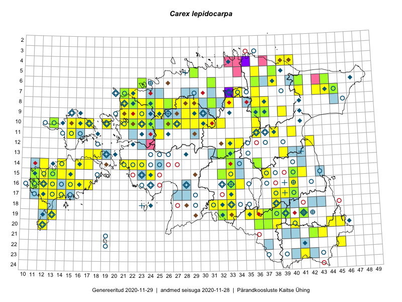

Carex lepidocarpa
Uuendatud: 2016-12-02
Kaardile koondatud taksonid: Carex lepidocarpa Tausch

Kaart põhineb 77 kirjel, neist vaatlusi 76 ja eksemplare 1. Taksonit on leitud 66 ruudust.
Kuvatud viited 20 esimesele andmebaasikirjele, ülejäänud PlutoFis
- Tiit Hallikma, Toomas Kukk: 2015-07-20: 07-44: ala
- Peedu Saar, Eerik Leibak: 2015-08-18: 11-38: ala
- Toomas Kukk, Peedu Saar: 2014-07-10: 07-41: ala
- Peedu Saar: 2015-09-07: 16-17: ala
- Toomas Kukk, Peedu Saar: 2014-09-10: 07-43: ala
- Toomas Kukk, Ott Luuk, Sander Laherand: 2014-08-24: 14-22: ala
- Thea Kull: 2015-06-21: 15-41: ala
- Thea Kull: 2015-06-15: 15-40: ala
- Thea Kull: 2015-08-03: 13-39: ala
- Ott Luuk: 2015-08-03: 10-32: ala
- Maria Abakumova: 2015-06-30: 16-33: ala
- Maria Abakumova, Helle Mäemets: 2015-07-03: 17-33: ala
- Maria Abakumova, Tiit Hallikma: 2015-07-09: 18-32: ala
- Eeva-Maria Jeletsky, Tarmo Niitla: 2015-08-03: 23-41: ala
- Mari Reitalu: 2015-06-19: 17-12: ala
- Mari Reitalu: 2015-07-02: 17-12: ala
- Mari Reitalu: 2015-07-27: 16-12: ala
- Mari Reitalu: 2015-09-03: 16-12: ala
- Mari Reitalu, Triin Reitalu: 2015-07-20: 16-12: ala
- Mari Reitalu, Oliver Parrest: 2015-08-12: 17-13: ala